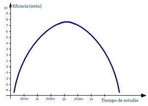

Estudiar
 De: La Frikipedia, la enciclopedia extremadamente seria.
De: La Frikipedia, la enciclopedia extremadamente seria.
Razones por las cuales estudiar

Esta es la profesora que todos merecemos
¡Profe!, ¡enseñanos todo!
Bueno, pues estudiar es ese proceso molesto al cual jóvenes de todas partes están obligados a someterse en colegios, institutos y universidades, y por el que pierden el tiempo soberanamente. Todavía no se ha podido desvelar el objetivo concreto de esta atrocidad, aunque parece ser que todo apunta a alguna de las siguientes causas:
- La dominación del mundo.
- La tendencia humana (y sobre todo española) de perder el tiempo
- Algunos también creen que sirve para desarrollar chepa, volver locos a los estudiantes y así enriquecer a los psicólogos (también conocidos como loqueros).
- Aprobar exámenes.
- Pelarnos los codos (aunque no sé muy bien para qué).
Básicamente consiste en memorizar miles y miles de datos de los cuales sólo acabarás recordando en 25% (y eso con un poco de suerte), y de los cuales sólo el 10% te serán alguna vez de utilidad (ese 10% no te lo habras estudiado porsupuesto.... o si quien sabe) .
Posee un elevado coste económico, tanto a nivel familiar, como a estatal. De hecho, y en contra de lo que se esperaría de una conducta inteligente, en muchos países del mundo, los menores de entre 14 y 18 años (dependiendo del país) están obligados por ley a estudiar.
Métodos de estudio
A pesar de todos los problemas y contratiempos que acarrea el estudiar, la mayoría de las personas del mundo menores de 30 años realizan esta actividad con relativa frecuencia. Para ello, a lo largo de la historia reciente se han desarrollado una serie de métodos para facilitar esta ardua labor de aprendizaje. Aquí están los principales:
- 1. Quemado de neuronas. También conocido como "pela-codos". Es el típico método del empollón. Consiste en coger todos los libros y apuntes (no importa de dónde hallan salido o si tienen mucha lógica o si los entiendes o no; mientras sean del profesor o de un compañero, sirven) que puedas, clavar los codos en la mesa, y empezar a leerlos, releerlos, requeteleerlos... hasta que las neuronas se queman con la información adquirida. Es similar al proceso de grabado de CDs: el láser quema la superficie para grabar los datos.
- 2. Reactivación de neuronas. Basado en el hecho científico que se resume en la frase «¡Ah! Ahora que me acuerdo...», este método de estudio consiste en plasmar la información en las neuronas con una débil película o imagen. Esto se puede hacer atendiendo un poco en clase o echándole un vistazo rápido (pero completo) a los apuntes y demás fuente escrita u oral de información. Esto hace que la información quede latente en el cerebro, aunque unas horas después no se pueda recuperar más del 50% de esa información. Para que este método sea efectivo, el día antes del examen (o dos antes, según la cantidad de información) ha de leerse otra vez la dicha información, de tal forma que la película antes grabada en las neuronas se reactiva, logrando hasta un 95% de información casi instantánea a la hora de examinarse. La información restante (5%) puede recuperarse haciendo mucha memoria y repasando lo ya recordado.
- 3. Campo constante. Como de todos es sabido, el sistema nervioso funciona por impulsos eléctricos. Y también que ciertos materiales (principalmente los férricos) pueden convertirse en imanes al aplicarles una campo magnético. Y que un campo magnético se produce por cargas eléctricas en movimiento (corrientes eléctricas). Pues en todos estos hechos científicos se basa este método. Es similar al de reactivación, solo que no se graba nada en las neuronas. Una vez aprendido algo, este "algo" se mantiene constantemente en la cabeza, ya sea recitándolo, haciendo ejercicios y problemas... día tras día. Al final tu cerebro queda "magnetizado" por esa información, aunque no se grabe en las neuronas. Es ideal para combinarlo con otros métodos, ya que se pueden aprender dos cosas "a la vez".
- 4. Dispositivo externo. Al igual que con un ordenador, cuando no quieres/puedes grabar algo en el disco duro, pues tienes por ahí CDs, DVDs, pen drive... Igualmente se puede hacer con nuestro cerebro. Si no queremos grabar algo en él (por el motivo que sea) siempre podemos utilizar "dispositivos externos", sólo que a la hora de estudiar se llaman "chuletas". Útil para tener la cabeza en otras cosas.
- 5. Indexación de contenidos. Nuestra capacidad para memorizar cosas es tremenda, aunque a veces no podamos tener acceso fácilmente a esa información memorizada. Por eso disponemos de un recurso por el cual podemos almacenar grandes cantidades de información de "difícil acceso", pero accesarlas mediante un índice o título. Así, por ejemplo, puedes memorizarte todos los títulos de los libros de un autor, y así de primeras no recordarlo, pero leyendo una lista de palabras, o unas siglas, recordarlo.
- 6. Tomárselo con calma. Este método tiene dos interpretaciones:
- La primera es esperar, y esperar, y esperar... a que pasen los años, que seguro que tras diez años de nulo esfuerzo, ya has aprobado la mitad de las asignaturas (por cojones o por pena).
- La segunda hace referencia al aparato digestivo ("tomar", sinónimo de "comer"). Consiste simplemente en comerse los libros y los apuntes, pero despacito, para no atragantarse (de ahí lo de "con calma").
Otros datos curiosos acerca del estudio
¿Sabías que ...
- ... está considerado en muchos lugares como antónimo de trabajar? (típico "¿Estudias o trabajas?")
- ... zilbeh pa' mejorah la hortojrafýa?
- ... el tiempo que inviertes en la frikipedia lo podrías estar usando para estudiar?
- ... no estudiamos porque no tenemos tiempo para ello?
- ... IP anónima no ha estudiado en su
puta vida, ni lo va a hacer?
- ... los estudiantes no realizan estudios, y los que realizan estudios no estudian (aunque lo hicieron en su día)?
- ... los estudios de los que se habla en frikipeida están hechos al método cara o cruz?
- ... que yo ahora mismo tendría que estar estudiando para el examen de mañana (y no, no es coña)?
- ... que tengo un examen de filosofia mañana y tendria que estar estudiando?
- ... Ahora me estoy llendo a hacer un
haraquiri estudiar?
Gráfica del tiempo de estudio
 Gráfica Tiempo-Resultados.
Esta es la gráfica que relaciona el tiempo que se dedica a estudiar y la recompensa/resultado que se obtiene de ello. El que tenga una mínima noción de matemáticas wikipédicas podrá observar que se trata de una parábola invertida, cuya fórmula se corresponde con ax^2 + bx + c.
Se explica: para un valor de tiempo nulo, el resultado que se obtiene lógicamente será nulo también (bueno, algunos cuentan con la suerte y son capaces de acertar algo en el examen: pero es pura casualidad). Según se pasa más tiempo estudiando, se van "aprendiendo" cosas, hasta llegar a un punto (entre 1 y 3 horas de estudio) en que se alcanza el máximo que uno puede dar de sí mismo (vértice de la parábola). A partir de ahí la mente comienza a sentir cansancio, y si no descansa su rendimiento irá bajando hasta alcanzar un valor nulo (o incluso peor, negativo). Aunque debido al efecto campo-constante (ver método de estudio 3) algunas parecen que te salen solas al hacer el examen.
Por supuesto, esta gráfica varía con cada persona. Algunas alcanzan el punto más alto a los 30 min, otros a las 4 horas, unos llegan más alto, otros más bajos, a unos les va mejor el método tres, a otros peor... excepto, claro está, para IP anónima y el Luisma, cuyas parábola de estudio no es una parábola sino una recta horizontal con valor casi igual a cero (recordemos que la suerte interfiere en estos asuntos), y para Chuck Norris, el Antichuck, el Monstruo espagueti volador, Dios, y demás seres de poder similar, cuya gráfica es una recta horizontal y de valor infinito (algunas más altas que otras).
Antagonismo del estudio
Aunque el trabajo es antagonista del estudio, se ha demostrado un herejismo ahun peor:

|
Yo no estudio, pues el estudio es la desconfianza de la inteligencia del compañero de al lado.
|

|
| IP anónima filosofando sobre una gran mentira.
|
Autor(es):
- Nexo
- Fordus
- Frikiman
- Aque
- Alex2610
- Guilfer
- LunátikO
- GonzaloQ
- Cibercrank
- Engalazillo
Frikipedia 2005-2016, Licencia
GFDL 1.2 - Extraído por FrikiLeaks